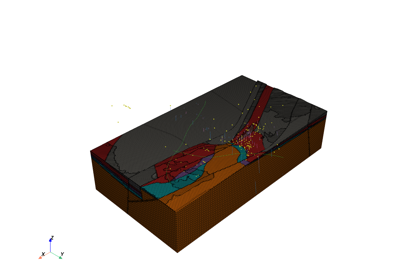

Contents¶
Here you will find a selection of examples showing what can you do and how you can do it in Vector.
Geological Models¶
Here you will find a selection of examples showing what can you do and how you can do it in Vector.

Reading COLLINSTOWN OMF project
Reading COLLINSTOWN OMF project